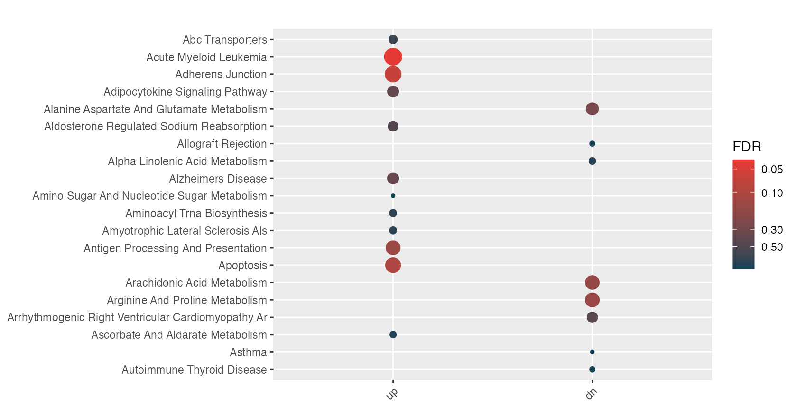

The primary focus of hypeR is on downstream enrichment analysis workflows. As long as enrichment results are formatted into a hyp object, they are compatible. To wrap third-party packages, we create modified version of the hypeR() function that calls external packages when performing the enrichment analysis, and then coerces the results into a hyp or multihypobjects. Here we wrap fgsea - an R-package for fast preranked gene set enrichment analysis (GSEA).
fgseais an R-package for fast preranked gene set enrichment analysis (GSEA). This package allows to quickly and accurately calculate arbitrarily low GSEA P-values for a collection of gene sets. P-value estimation is based on an adaptive multi-level split Monte-Carlo scheme.
Here we can take a differential expression analysis and rank genes by their t-statstic or some other measure of differential expression between two groups.
data(limma)
signature <- limma %>% arrange(desc(t)) %>% select(symbol, t) %>% deframe()
head(signature)LMAN2L SHKBP1 SPHK2 AJUBA TJP1 TMCC3
6.59 6.56 6.37 6.26 6.26 6.11
tail(signature) PALD1 FRA10AC1 UNG BET1 NKIRAS1 GPR146
-6.21 -6.28 -6.28 -6.52 -7.26 -8.48 We will also need some genesets…
genesets <- msigdb_gsets("Homo sapiens", "C2", "CP:KEGG", clean=TRUE)This is an experimental feature and not officially apart of the package.
The wrapper will take a signature and genesets as normally would be pass to hyper() and will instead feed them into fgsea::fgseaMultilevel(). Please refer to their documentation for specific parameters. This will test your preranked signature in both directions (e.g. enrichment in high and low ranking genes). The wrapper then separates each direction into and up and down signature respectively and formats them within a hyp object. Thus the wrapper will return a multihyp object.
.handle.genesets <- function(genesets) {
if (is(genesets, "list")) {
gsets.obj <- gsets$new(genesets, quiet=TRUE)
}
else if (is(genesets, "gsets") | is(genesets, "rgsets")) {
gsets.obj <- genesets
}
else {
stop("Genesets must be gsets/rgsets object or named list of genesets")
}
return(gsets.obj)
}
fgsea.wrapper <- function(signature, genesets, sample.size=101, min.size=1, max.size=Inf, ...) {
# Save original arguments
args <- as.list(environment())
# Save gsets object
gsets.obj <- .handle.genesets(genesets)
args$genesets <- gsets.obj
# Run fgsea
results <- fgsea::fgseaMultilevel(stats=signature,
pathways=gsets.obj$genesets,
sampleSize=sample.size,
minSize=min.size,
maxSize=max.size,
...)
data <- results %>%
data.frame() %>%
plyr::rename(c("pathway"="label", "padj"="fdr", "log2err"="lte", "size"="overlap", "leadingEdge"="le")) %>%
dplyr::rename_with(tolower) %>%
mutate(pval=signif(pval, 2)) %>%
mutate(fdr=signif(fdr, 2)) %>%
mutate(le=sapply(le, function(x) paste(x, collapse=','))) %>%
mutate(signature=length(signature)) %>%
mutate(geneset=sapply(label, function(x) length(gsets.obj$genesets[[x]]))) %>%
dplyr::select(c("label", "pval", "fdr", "lte", "es", "nes", "signature", "geneset", "overlap", "le"))
data.up <- data %>%
dplyr::filter(es > 0) %>%
dplyr::arrange(pval, es)
data.dn <- data %>%
dplyr::filter(es < 0) %>%
dplyr::arrange(pval, es)
# Reproducibility information
info <- list(fgsea=paste("v", packageVersion("fgsea"), sep=""),
signature=length(signature),
genesets=args$genesets$info())
info <- c(info, args[c("sample.size", "min.size", "max.size")])
info <- lapply(info, as.character)
# Wrap dataframe in hyp object
hyp.up <- hyp$new(data=data.up, args=args, info=info)
hyp.dn <- hyp$new(data=data.dn, args=args, info=info)
mhyp <- multihyp$new(data=list("up"=hyp.up, "dn"=hyp.dn))
return(mhyp)
}You’ll likely see some warnings from fgsea…
mhyp_obj <- fgsea.wrapper(signature, genesets)Warning in preparePathwaysAndStats(pathways, stats, minSize, maxSize, gseaParam, : There are ties in the preranked stats (70.45% of the list).
The order of those tied genes will be arbitrary, which may produce unexpected results.Warning in fgsea::fgseaMultilevel(stats = signature, pathways =
gsets.obj$genesets, : For some pathways, in reality P-values are less than
1e-10. You can set the `eps` argument to zero for better estimation.
print(mhyp_obj)(multihyp)
(hyp) up
132 x 10
(hyp) dn
54 x 10
# The hyp object of the up signature
hyp.up <- mhyp_obj$data$up
print(hyp.up$info)$fgsea
[1] "v1.15.0"
$signature
[1] "9682"
$genesets
[1] "C2.CP:KEGG v7.2.1"
$sample.size
[1] "101"
$min.size
[1] "1"
$max.size
[1] "Inf"
head(hyp.up$data[,1:6]) label pval fdr lte es nes
1 Proteasome 8.8e-06 0.00055 0.5933255 0.6790805 2.161802
2 Steroid Biosynthesis 2.2e-05 0.00084 0.5756103 0.8209958 2.107131
3 Neurotrophin Signaling Pathway 2.3e-05 0.00084 0.5756103 0.4861587 1.966820
4 Tight Junction 3.6e-05 0.00110 0.5573322 0.4919114 1.958631
5 Endocytosis 3.0e-04 0.00690 0.4984931 0.4103587 1.729304
6 Endometrial Cancer 3.0e-04 0.00690 0.4984931 0.5940982 1.940034Now we can use it as we normally would…
hyp_dots(mhyp_obj, merge=TRUE)